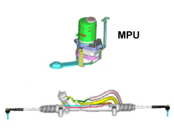

4110DC MPU CHECK (Motor Pump Unit)
- Path
- Test > 41 STEERING UNIT > 4110 STEERING CONTROL AND LINKAGE > 4110D STEERING ELECTRICAL CONTROL SYSTEM > 4110DC MPU CHECK (Motor Pump Unit)
- Kind
- test / check procedure
- Applies to
- all engines; all production periods
- Interactive page
- https://sloeber94.github.io/elrnDB-fCrm/en/#/194002441
Applies to: all engines; all production periods
STEP | CHECK TO BE PERFORMED | RESOLUTION IF THE CHECK IS NOT OK |
|---|---|---|
1 | Check power supply (+15)
| Check the continuity of the 10 A fuse F51 in the dashboard junction unit and if broken replace it checking out the cause. Check the continuity of the wiring between the fuse and the MPU |
2 | Check earth connection Check the continuity of the connection between pin 2 of the two-way supply connector for the MPU connector plate and the earth | Restore the continuity of the earth connection |
3 | Check power supply (+30) Connect using the Examiner in Voltmeter mode with the positive probe at pin 1 and the negative probe of the two-way connector for the connector plate for the MPU earthed. | Check the continuity of the 80 A fuse F73 in the battery junction unit and if broken replace it checking out the cause. |
